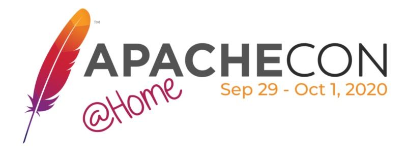

This year’s ApacheCon was an overwhelming success, with many tracks running in parallel. If you missed some of the talks on the Camel/Integration or would like to revisit your favorites, video recordings from ApacheCon @Home 2020 are now available on The Apache Software Foundation YouTube channel.
You can watch the content from all three days in one playlist, with over 10 hours of content.
For convenience, we listed the talks as they appear in the schedule here along with the slides shared by the speakers.
Sessions
Sessions ran for two days with six talks each day.
What’s new with Apache Camel 3?
by Andrea Cosentino and Claus Ibsen
Making Enterprise Integration Patterns Work for You
by Justin Reock
Getting started with Apache Camel on Quarkus
Build and Deploy Cloud Native Camel Quarkus Routes With Tekton and Knative
by Omar Al-Safi
Camel Kafka Connectors: when Camel meets Kafka
by Andrea Tarocchi and Hugo Guerrero
Integrating Postgres with Apache Camel and ActiveMQ
by Justin Reock
Camel API Gateway
How to contribute textual tooling for Apache Camel in several IDEs
Serverless Integration Anatomy
Testing Camel K integrations with Cloud Native BDD
“Cloud Native” My Camel
by Michael Costello and David Gordon
Software Architecture and Architectors: useless VS valuable
Panel and lightning talks
On the last day we had the panel and lightning talks.
Panel on the future of software integration
Panelists: Omar Al-Safi, Christina Lin, Margara Tejera, Gunnar Morling, Sanjna Verma
Moderated by María Arias de Reyna
Lightning talks
The journey of Outreachy with Apache, by Aemie Jariwala, follow-up link
Experience of Google Summer of Code with Apache Camel, by Nayananga Muhandiram, follow-up link
How to monitor Camel applications with nJAMS, by Abdelghani Faiz, follow-up link
Real time Camel route visualizer while coding, by Claus Ibsen, follow-up link
VS Code Tooling for Apache Camel K tour, by Aurélien Pupier, follow-up link
Syndesis: Low code integration with Apache Camel, Kurt Stam, follow-up link
Introducing AtlasMap Data Mapper, Tomohisa Igarashi, follow-up link
Camel from an outsider: Insights on the way to adoption, Jose Raez Rodriguez